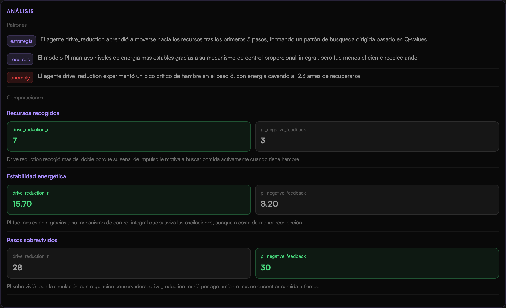
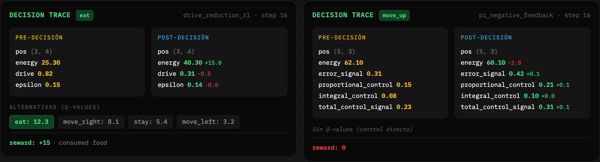
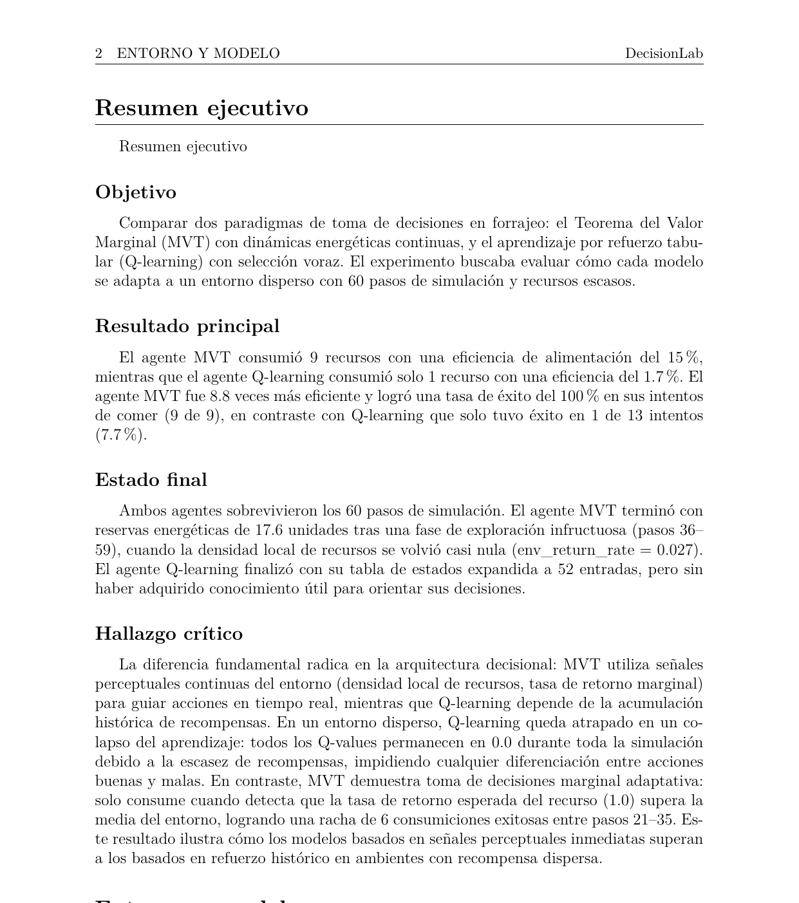

Agentes inteligentes · Fase 2 — Infraestructura de simulación y análisis
Lenguaje natural → modelo Python ejecutable.
Researcher · Reasoner · Builder
Ejecutar · observar · analizar · informar · recordar.
Este TFG
Integración por duck typing: sin herencia, sin dependencias estáticas, sin coordinar releases.
class DecisionModel(Protocol):
def decide(self, perception: dict) -> Action:
... # elegir acción — solo lectura
def update(self, action, reward, new_perception):
... # ajustar el estado interno
def get_state(self) -> dict:
... # exponer internals (q_values)
Tres métodos, cero acoplamiento. Ambas fases comparten esta interfaz y evolucionan por separado: el laboratorio carga cualquier modelo que la cumpla.
perception: x, y, grid_width, grid_height, step, resources, last_action_result
Generar la especificación del entorno desde lenguaje natural.
Ejecutar modelos sin acoplamiento, incluso varios a la vez.
Registrar el comportamiento de forma estructurada.
Analizar patrones comportamiento–objetivo.
Generar un informe PDF reproducible.
Persistir memorias reutilizables entre experimentos.
quién y dónde — posición en la rejilla, energía, historia.
cómo decide — la política, separada del cuerpo.
Recursos, reglas del entorno y eventos inmutables.
Cada agente registra eventos, trayectorias y episodios; el Reporter compila con tectonic, sin fallback.



Dashboard oscuro · replay 2D animado · tarjetas de datos en vivo por WebSocket
Implementar deja de ser lo caro; especificar y verificar pasan al centro.
Tres métodos compartidos. Sin coordinar releases durante meses de desarrollo: cada fase avanzó por su cuenta.
Tareas con criterios de aceptación, dependencias, prioridades y paralelismo. Las decisiones, visibles antes de delegar.
El humano decide alcance, contratos, diseño visual y aceptación final. El agente implementa módulos acotados, pruebas, migraciones y refactores.
pytest · Playwright · compilación LaTeX. Un cambio no entra si rompe el contrato.
Lectura humana + subagentes especializados de alta confianza sobre el diff.
Métricas duras contra la propia simulación — no basta con que pasen los tests.
6 paradigmas — rejilla 8×8 · 360 eventos · 15 consumos.
DDM · homeostasis · dirigido-vs-hábito · valor por atributos · autocontrol · pavloviano
4 paradigmas — rejilla 10×10 · 199 eventos · 7 consumos.
impulso con umbral · RL homeostático · inferencia activa · codificación predictiva
Juez externo Codex, rúbrica de 6 criterios: alta fidelidad de observación e informe real; reservas por imprecisiones puntuales de cita paso a paso.
Límites: no valida teorías por sí solo · depende del LLM · dominio 2D. Ampliaciones: más paradigmas y entornos · métricas estandarizadas · reanudación de sesiones.
«De cómo lo escribo a qué quiero exactamente que ocurra.»
Gracias · Juan Freire Alvarez · TFG Fase 2 · USC